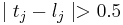
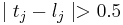
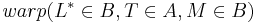
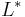
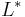
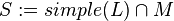
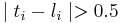
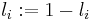

Please direct any questions or issues to this Image.sc Forum thread.
Thank you for your patience as we improve the website!
Topology preserving warping error

The warping error is a segmentation metric that tolerates disagreements over boundary location, penalizes topological disagreements, and can be used directly as a cost function for learning boundary detection[1].
In other words, instead of focusing on the geometric differences (pixel disagreement) between two segmentations, the warping error focuses on the objects and measures the topological error between them.
Contents
Pixel error
The simplest way of evaluating a segmentation is by measuring the pixel error between the original labels and the segmented ones. Let  denote the value of the boundary labeling L at image location i. The pixel error of L with respect to another binary labeling L* is the number of pixel locations at which the two labelings disagree. This can also be written as the squared Euclidean distance
denote the value of the boundary labeling L at image location i. The pixel error of L with respect to another binary labeling L* is the number of pixel locations at which the two labelings disagree. This can also be written as the squared Euclidean distance  , which is equivalent to the Hamming distance since the labels are binary-valued.
, which is equivalent to the Hamming distance since the labels are binary-valued.
The pixel error is appealing because of its simplicity, but suffers from a serious defect. It is overly sensitive to minor displacements in the location of a boundary that are ubiquitous even when comparing one human boundary labeling to another. These disagreements cause no qualitative differences in the interpretation of the image, but can lead to large quantitative differences in pixel error.
Digital topology and the warping error
Jain et al. [1] introduced the warping error, another metric for comparing boundary labelings based on concepts from the field of digital topology.
If L* can be transformed into L by a sequence of pixel flips that each
- preserve a set of desired topological properties
- occur only at locations within a mask M,
then we will say L is a warping of L*, or  . The first condition constrains L and L* to be topologically equivalent. The second condition can be used to constrain L to be geometrically similar to L*. Both conditions will be explained in more detail below.
. The first condition constrains L and L* to be topologically equivalent. The second condition can be used to constrain L to be geometrically similar to L*. Both conditions will be explained in more detail below.
Now consider the pixel error of T relative to warpings of L*. The warping error between some candidate labeling T and a reference labeling L* is the Hamming distance (or equivalently squared Euclidean distance) between L and the "best warping" of L* onto T:
 (Eq. 1)
(Eq. 1)
In other words, the warping error between two segmentations is the minimum mean square error between the pixels of the target segmentation and the pixels of a topology-preserving warped source segmentation.
Topological constraints

To impose topological constraints on the warping, we use concepts from digital topology, a field that extends the concepts of continuous-space topology to digital images. One of the most fundamental principles of this field is that complementary definitions of adjacency must be used for foreground (“1”) and background (“0”) pixels, so that a digital analog of the Jordan Curve Theorem holds. We use the 4-adjacency for foreground and the 8-adjacency for background, and calculate connected components based on these adjacencies.
A major practical goal of digital topology is to identify methods of altering the geometry of objects within a digital image without altering any topological properties of the image. A simple point is defined as a location in a binary image at which the pixel can be flipped to its complementary value without changing any topological properties of the image. These properties include, for example, the number of -connected components of the foreground and the number of  -connected components of the background.
-connected components of the background.
Although flipping a single simple point is guaranteed to preserve topology, it is not true that simultaneously flipping an arbitrary set of multiple simple points will preserve topology. Hence, many algorithms that deform digital images by altering simple points instead perform a sequence of flips, where any particular flip is made at a point that is simple relative to the current state of the image. Since all flips preserve topology, such a sequence of flips is a topology-preserving deformation of the original image (sometimes called a homotopic deformation). The converse has also been proven: two images that are topologically equivalent in the sense of sharing isomorphic adjacency trees can always be transformed into each other by a sequence of changes in the values of simple pixels.
In short, by definition flipping a simple point is a topology-preserving operation and flipping a non-simple point is not topology-preserving. Non-simple points can be classified by the nature of the topological change they would cause by being flipped. The possible topological changes are
- splitting,
- merging,
- hole addition/deletion,
- or object addition/deletion.
We may wish to allow some of these types of changes, and therefore flipping of some types of non-simple pixels.
We will write simple(L) to denote the set of simple points of L.
Geometric constraints
There are many ways to define the mask, depending on the exact nature of the desired geometric constraints. For example, in the original paper implementation, they choose M to be the set of all pixels within Euclidean distance 5 from the background of L. This allows the foreground of L to expand arbitrarily, as long as topology is preserved. But the foreground can shrink by only a limited amount. Note that basing M on L makes warping an asymmetric relation.
Descent algorithm for warping

As described by the authors, there is not an efficient algorithm for finding the global minimum in Eq. (1), and indeed this is likely to be an NP-hard problem. However, there is a very simple descent algorithm for finding local minima. During warping, we are allowed to flip simple points of L that lie inside the mask M, i.e., points in the set  . Flipping any such pixel j of L satisfying  produces a new warping with smaller error. The descent algorithm greedily picks the pixel for which this error reduction is the largest, breaking ties randomly.
. Flipping any such pixel j of L satisfying  produces a new warping with smaller error. The descent algorithm greedily picks the pixel for which this error reduction is the largest, breaking ties randomly.
Descent algorithm for warping the binary image L* onto the binary image T, under geometric constraints set by the mask image M:
- 
 := 
:= - do
- 
 , breaking ties randomly
, breaking ties randomly- if 
- 
- else
- return
- return
- end
Since  is decreasing, the algorithm is guaranteed to converge to a local minimum of the warping error. How problematic is the lack of an efficient algorithm for finding a global minimum? It does not seem a problem in practice. The warpings found by this descent algorithm look reasonable to the eye. In spite of the random choice of flipped pixels, the results are highly reproducible in practice.
is decreasing, the algorithm is guaranteed to converge to a local minimum of the warping error. How problematic is the lack of an efficient algorithm for finding a global minimum? It does not seem a problem in practice. The warpings found by this descent algorithm look reasonable to the eye. In spite of the random choice of flipped pixels, the results are highly reproducible in practice.
Warping error versus Rand error
At first glance, it may seem that the warping error measures only boundary detection performance. But it is also a good measure of segmentation performance. This is because digital topology tells us how any single pixel affects the global topology of an image. The warping error is an upper bound on the number of topologically-relevant boundary labeling errors in T (if a geometric mask is used, then the warping error also includes labeling errors of a geometric nature). Therefore, if segmentations are generated from T and L* by finding their connected components, then the warping error should be a reasonable measure of the topological disagreements between the segmentations.
The Rand error can be used to compare segmentations in which regions are noncontiguous clusters of pixels. Such segmentations are not equivalent to boundary labelings, so the warping error cannot be applied. In many applications, this is not a significant limitation.
The warping error can be distinguished from the Rand error in other respects. The warping error can penalize all kinds of topological errors, including the presence of holes and handles, but the Rand error penalizes only connectivity errors. In certain medical imaging situations, control of such aspects of topology is especially important. The Rand error mildly penalizes shifts in boundary location, while the warping error ignores them altogether. The warping error weights a topological error by the number of pixels involved in the error itself, while the Rand error weights a split or merger by the number of pixels in the objects associated with the errors.
2D implementation in Fiji
The warping error metric is implemented for 2D images in the Trainable Weka Segmentation library. Here is an example of how to use it in a Beanshell script:
import trainableSegmentation.metrics.WarpingError;
import ij.IJ;
// original labels
originalLabels = IJ.openImage("/path/original-labels.tif");
// proposed (new) labels
proposedLabels = IJ.openImage("/path/proposed-labels.tif");
// mask with geometric constraints
mask = IJ.openImage("/path/mask.tif");
// threshold to binarize labels (just in case they are not binary)
threshold = 0.5;
metric = new WarpingError( originalLabels, proposedLabels, mask );
warpingError = metric.getMetricValue( threshold );
IJ.log("Warping error between source image " + originalLabels.getTitle() + " and target image "
+ proposedLabels.getTitle() + " = " + warpingError);
See also
References
- ↑ 1.0 1.1 V. Jain, B. Bollmann, M. Richardson, D.R. Berger, M.N. Helmstaedter, K.L. Briggman, W. Denk, J.B. Bowden, J.M. Mendenhall, W.C. Abraham, K.M. Harris, N. Kasthuri, K.J. Hayworth, R. Schalek, J.C. Tapia, J.W. Lichtman, S.H. Seung (2010), Boundary Learning by Optimization with Topological Constraints, IEEE Conference on Computer Vision and Pattern Recognition, pp. 2488-2495, DOI 10.1109/CVPR.2010.5539950

{kind=link}